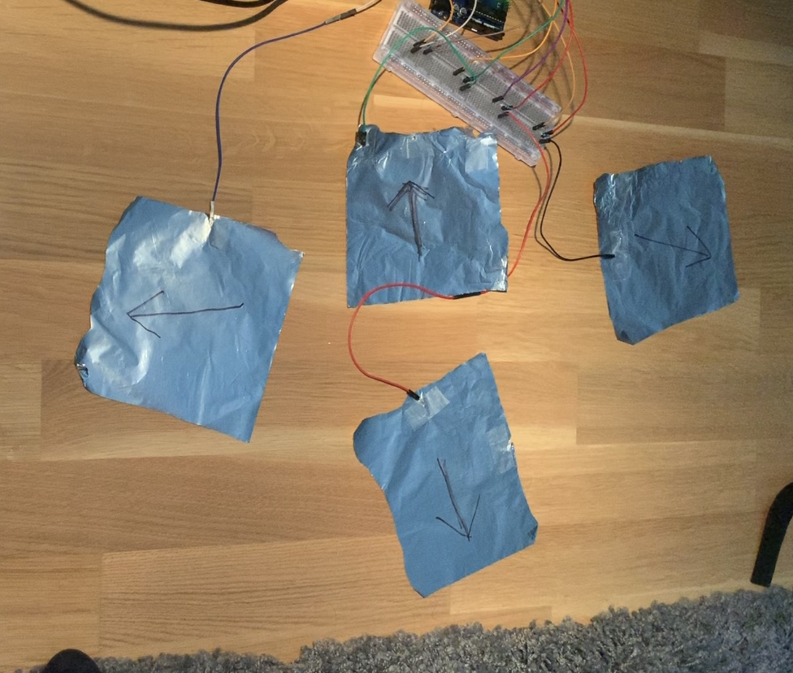
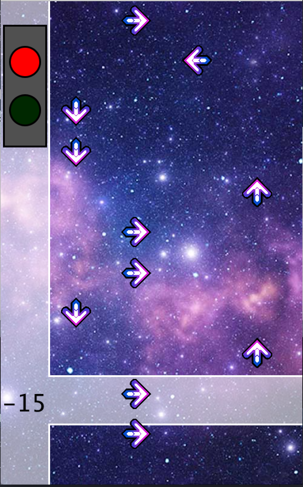
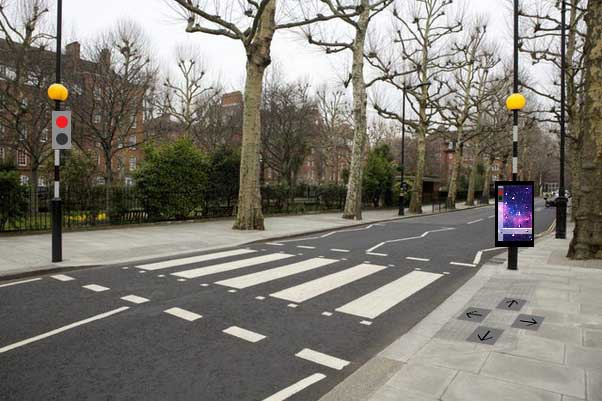

Research
I really struggled with starting out with this challenge, because I found it super-vague, and did not even know where to look for a suitable "playful interaction". Nevertheless, I slowly went through a few projects, and found ones that I really liked.
Fun Sanitizer
The Fun theory hand sanitizer is a project by Adi Kujal, who made it for a Design for industry course on Northumbria University. Its quite a simple idea - putting a hand sanitizer in a bottle of Vodka, which makes it stand out, sparks curiosity and makes more people use the sanitizer.

I really like the simplicity, yet cleverness of the project. It catches attention and makes the surrounding people curious about the contents of the bottle, so they use it for hand sanitation. I think it really entails the idea of Fun Theory and playful interaciton, in a very simplistic, but effective way.
Slow Games
Some time ago, I came across this beautiful idea of Slow Games. Now I again saw it in the Inspiration channel on Teams, and I liked it very much, so I put it in my Research. It is a neat proect by a designer Ishac Bertran from Barcelona. He created a simple and powerful concept of Slow frequecy games - where you really have to slow down to play the games.
I really like that it takes something that is traditionally seen as a way to make time pass more quickly - games - and makes them into a slow-paced, even artistic object. You play the game every day and have to wait for 24 hours for your move to take place. Its a nice thought-provoking project that challenges you to stop rushing and enjoy this day-by-day interaction. It also makes the game even more rewarding, and I can imagine that with time, the value the owner puts to the game is very high, as it took them so much time to get some progress.
Pizza Hut Interactive Pizza table
This concept was made as a collaboration with Pizza Hut and Chaotic Moon Studios. It showcases a playful way of building your desired pizza, offering a wide range of customization, while making the process more fun, and making it definitely clear for the chef to know what exactly you want.
Even though it's just a concept, I really like the idea, as it makes your wait for the food much more enjoyable, by visualizing the process of building your own pizza, and making you more involved. This adds a value to the final product, and may persuade some customers to go to that pizza place over any other. I would love to try this out, so I can see that the aim of catching attention and attracting customers really works.
Tinkering
I did not have many ideas on where to start, so I just decided to play around with Arduino and make some small fun interactive projects.
Push-up brothers
I really wanted to play around with servos, so I tried out several different ideas, before settling for this - "push up brothers". One servo is controlled by the computer - making one of the brothers tirelessly do push-ups, whereas the other one is controlled by the user with a proximity sensor - the faster the player pushes back and forth in front of the sensor, the faster their push up brother works out. I think its a nice little silly project, and it was fun to join Arduino with some arts & crafts to create the servo-powered stick figures.
Bop It! low-cost version
Next, I was a little bit more inspired into doing some more interactive game, so I tried making my own Bop It! game. I used two aluminium capacitive sensors, a light sensor and a button, and hooked them up using Arduino and Processing. The random selection of the next move is done in Processing, which also checks whether the player did the right move, and according to that increases or decreases their score. It is quite fun, but it does not always react immediately, especially with the light sensor.

Low-cost Operation game
For the third tinkering showcase, I was inspired to make a similar playful interactive game to Operation. I cut out a maze into an aluminium foil, set up a capacitive touch function and made a screen in processing that informs the player whether they can continue or not. The game requires the player to have one hand on the aluminium foil, and to move the spike with the other hand through the maze. I really like that it is super-simple to set up, yet a quite innovative use of the capacitive touch function Arduino provides.

Design and Build
Dance Dance Redlightvolution
For the challenge, I wanted to make my own "fun theory" such as the piano stairs, or the arcade trashcan, so I started thinking of what problem I could address. After a while, I came to the conclusion that I could make waiting for a red light more enjoyable, making jumping red light a less likely thing to do. After some ideation, I came up with the idea of creating my own version of Dance Dance Revolution, and putting it to the end of a pedestrian crossing.
I created an Arduino circuit with four capacitive sensors, then programmed the interface and interaction in processing. The capacitive sensors are the arrows in four different directions, that when touched, they send a directional message through the serial connection to processing, which then evaluates if the right arrow was hit at a right time. I used the song Genesis by Justice, as I found that it fit nicely.
I think my final product is quite innovative, as it takes two different things - waiting at a red light and DDR - and puts them in the same context to make the wait more meaningful and playful. I'm happy that I was able to make something similar to the fun theory examples we have seen, even though I just made a proof-of-concept, not a full prototype that could be tested in the field.
Showcase
Reflect
Playful interaction in general and my vision of playful interaction in the future
Playful interaction can be very valuable and behavior-changing, if it is used in a meaningful way. The whole idea of fun theory, where you create a more fun way to shape people's behaviors to do the better and harder thing to do is a very powerful concept, that I think shows that when you think about some dilemma from a different perspective, you might find valuable and groundbreaking solutions. I hope to see more innovative playful interactions put in public spaces, but also would love to take part in some project that would change human behavior for the better (especially in environmental issues).

My final product
I think my final product is a good proof-of-concept. I managed to do what I set out to do - an interactive, working DDR, that could potentially be improved to be put at a pedestrian crossing. I sometimes struggled with the prototype being too fragile - the cables kept disconnecting or upon touching the sensors, they did not reach the necessary threshold to send the directional signal through the serial connection. Nevertheless, after playing around with it, I found a nice balance, that serves as a nice foundation for a potential more hi-fi version that could be used in terrain. I would love to see if my idea could bring a positive behavior change. Overall, I am satisfied with my creation, and I think it tackled the challenge well.
My experience using this technology
I really liked combining physical interaction with the Arduino capacitive sensors and digital prototypes using Processing. I found it amusing to use capacitive sensors, especially when playing around with it and using bananas or similar things, and seeing it work. Overall, I think linking different programs to create something innovative is really fun, and I liked that I was able to tinker around with Arduino in this course, as I myself would probably never pick it up on my own.